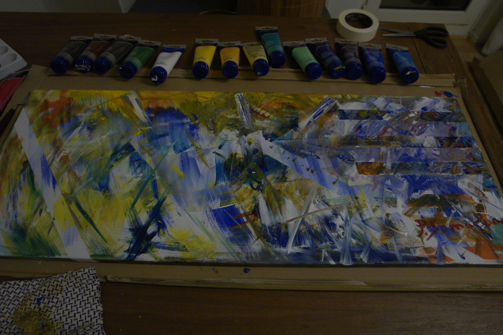

The Artist in You
I like painting.
Especially the kind that involves no thinking, no composition—just spread the colors, mix them with each other, and watch the canvas change.
Recently, I could find some time to paint, and here is the result.

Soon thereafter, I found some more time and made a short video.